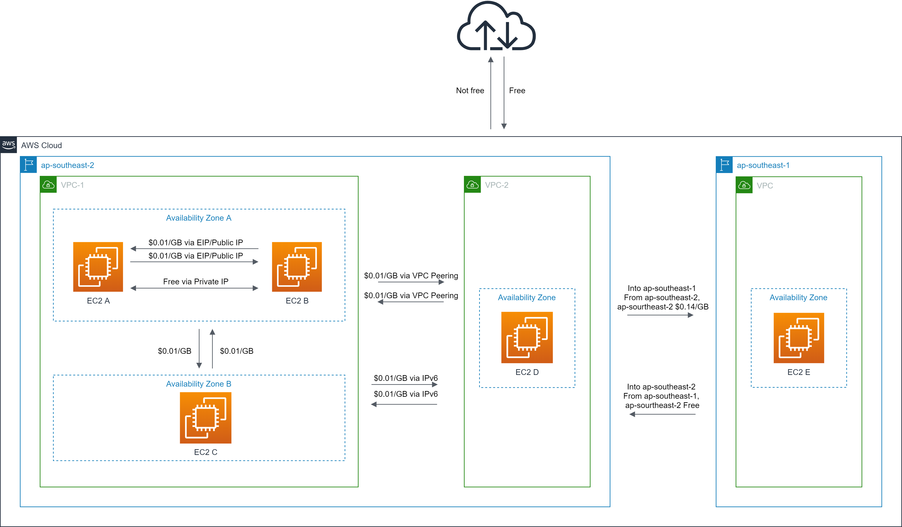
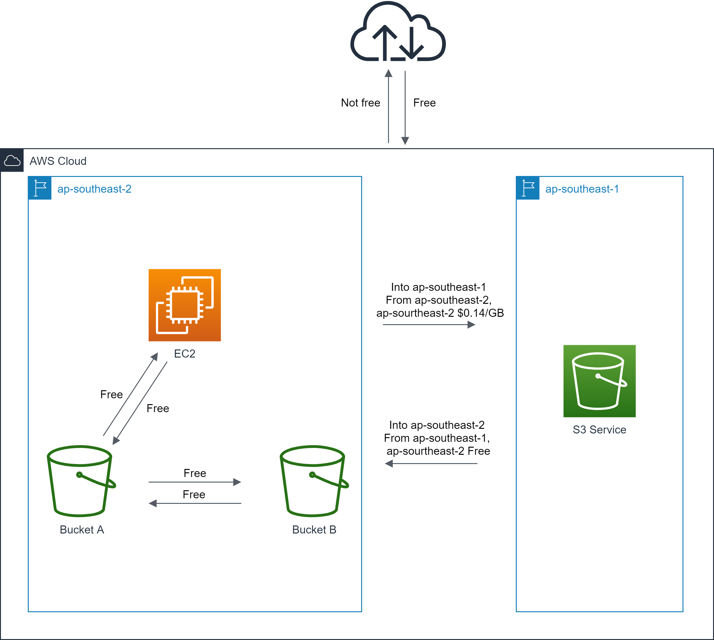

AWS的数据传输类型大致有如下三类：
- 与Internet之间的数据传输
- AWS内部跨区域的数据传输
- AWS内部同一区域的数据传输
本文将以ap-southeast-2区域中的EC2和S3为例。
与Internet之间的数据传输费用计算
所有从Internet到AWS的流量是免费的，所有从AWS到Internet的流量是收费的。即对AWS服务而言，上行收费，下行免费。
针对上行流量，AWS根据不同的使用量采用不同的费率，下表中展示的是ap-southeast-2区域从AWS到Internet的数据传输费率。
| Rate tiers | Pricing |
|---|---|
| Up to 1 GB / Month | $0.00 per GB |
| Next 9.999 TB / Month | $0.114 per GB |
| Next 40 TB / Month | $0.098 per GB |
| Next 100 TB / Month | $0.094 per GB |
| Greater than 150 TB / Month | $0.092 per GB |
那么问题来了，在这一个月中S3和EC2均产生了1GB到Internet的上行流量，AWS应该收我多少钱？$0? 不是的，会产生 $0.114 费用。
为啥？
AWS会根据从AWS服务传输到Internet的数据总量计算数据传输费率。具体而言，AWS会将从Amazon EC2, Amazon S3, Amazon Glacier, Amazon RDS, Amazon Redshift, Amazon SES, Amazon SimpleDB, Amazon SQS, Amazon SNS, Amazon DynamoDB, AWS Storage Gateway, 和 Amazon CloudWatch Logs到Internet的流量进行合并计算数据传输费率。
比如，我们只使用了EC2和S3服务，在本月我们已经使用了10TB，那么接下来EC2或者S3到Internet的费用到会按照$0.098/GB收费，知道使用到下一个费率标准。
简单说，下行免费，上行收费，费率算总量。
跨区域的数据传输费用计算
不同区域对跨区域数据传输的费率是不一样的。对于上行的数据传输会按照费率收取费用，对于下行的数据传输不收费。
比如现在有2台EC2实例A和B，A在悉尼(ap-southeast-2)，B在新加坡(ap-southeast-1)。这两台实例之间如何收取数据传输费用？
已知从悉尼ap-southeast-2到其他区域的数据传输费用为 $0.14/GB，从新加坡ap-southeast-1到其他区域的数据传输费用为 $0.09/GB
则从A给B传输1GB的数据，A需要付出数据传输费用 $0.14，B不需要付费。从B给A传输1GB的数据，A不需要付费，B需要付费 $0.09。
下行免费，上行收费，费率分区域。
到CloudFront的数据传输费用计算
无论EC2还是S3到CloudFront的数据传输都是免费的。
同一区域内的数据传输费用计算
S3
S3 bucket之间在同一区域进行数据传输不收费。
S3和其他AWS服务在同一区域进行数据传输不收费。比如EC2和S3之间传输数据是免费的。
EC2
- Amazon EC2，Amazon RDS，Amazon Redshift，Amazon DynamoDB Accelerator（DAX），Amazon ElastiCach 和 Elastic Network Interfaces进行跨可用区或使用VPC对等连接传输数据，上下行都需要收费，$0.01/GB
比如在可用区A中有1台EC2 EC2-A，在可用区B中有1台EC EC2-B。当EC2-A向EC2-B传输1G数据，EC2-A需要支付 $0.01 上行数据传输费用，EC2-B需要支付 $0.01 下行数据传输费用。总共需要 $0.02 数据传输费用。
- 同一个区域内，使用公网IPv4或者弹性IPv4地址传输数据，上下行都需要收费，$0.01/GB。
比如在可用区A中有两台EC2 EC2-A和EC2-B，它们之间使用公网IP传输数据是需要收费的，假如EC2-A向EC2-B发送1GB的数据，EC2-A需要支付 $0.01 上行数据传输费用，EC2-B需要支付 $0.01 下行数据传输费用。总共需要 $0.02 数据传输费用。
Q: 跨可用区使用Public IP传输数据如何收费？
跨区域使用Public IP或者EIP传输数据只会收一次费用。
比如在可用区A中有1台EC2 EC2-A，在可用区B中有1台EC EC2-B。当EC2-A通过EIP向EC2-B传输1G数据，EC2-A需要支付 $0.01 上行数据传输费用，EC2-B需要支付 $0.01 下行数据传输费用。总共需要 $0.02 数据传输费用。
同一个区域内，使用IPv6跨VPC传输数据，上下行都需要收费，$0.01/GB。
同一个可用区内Amazon EC2, Amazon RDS, Amazon Redshift, Amazon ElastiCache instances 和 Elastic Network Interfaces 之间传输数据免费。如果使用VPC对等连接，则需要按照VPC对等连接的费率收费。
比如在可用区A中有两台EC2 EC2-A和EC2-B，它们之间使用私有IP传输数据是免费的。
在同一区域中内 Amazon S3、Amazon Glacier、Amazon DynamoDB、Amazon SES、Amazon SQS、Amazon Kinesis、Amazon ECR、Amazon SNS、Amazon SimpleDB 和 Amazon EC2 实例之间传输数据是免费的。通过PrivateLink终端节点访问的AWS服务将产生标准PrivateLink费用。
使用私有 IP 地址从 Amazon Classic Elastic Load Balancer 和 Amazon Application Elastic Load Balancer与EC2 实例之间传输数据是免费的。
总结
EC2

S3
